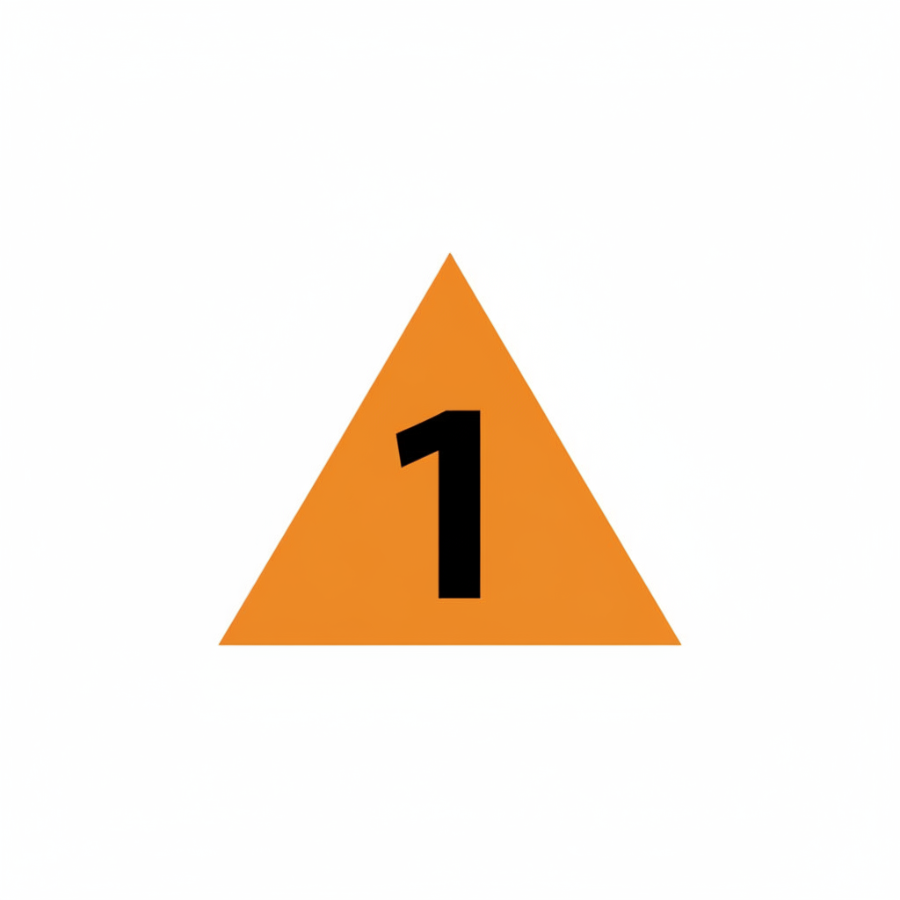

Attendez, SVP...
Cliquez sur les triangles orange (

, etc.
le cas échéant) pour afficher les détails de chaque ascension (avec un point clignotant en damier qui indique l'arrivée).
Cliquez sur les boutons (en haut à droite) pour afficher ou masquer les détails.